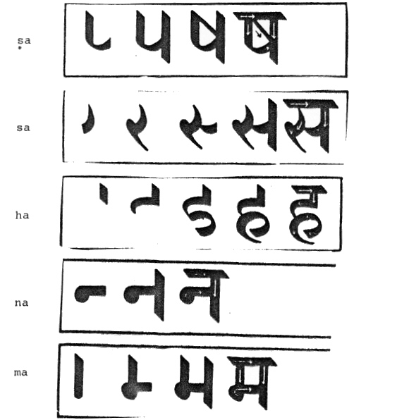
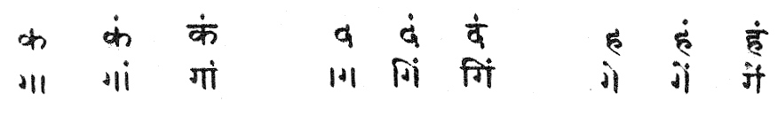

mailto:payer@payer.de
Zitierweise | cite as:
Payer, Alois <1944 - >: Sanskritkurs. -- Devanāgarī = देवनागरी. -- 4. Schriftübung 4. -- Fassung vom 2008-11-20. -- URL: http://www.payer.de/sanskritkurs/schrift04.htm
Erstmals hier publiziert: 2008-11-20
Überarbeitungen:
Anlass: Lehrveranstaltungen 1980 - 1984
©opyright: Dieser Text steht der Allgemeinheit zur Verfügung. Eine Verwertung in Publikationen, die über übliche Zitate hinausgeht, bedarf der ausdrücklichen Genehmigung des Verfassers
Dieser Text ist Teil der Abteilung Sanskrit von Tüpfli's Global Village Library
Falls Sie die diakritischen Zeichen nicht dargestellt bekommen, installieren Sie eine Schrift mit Diakritika wie z.B. Tahoma.
Die Devanāgarī-Zeichen sind in Unicode kodiert. Sie benötigen also eine Unicode-Devanāgarī-Schrift.

Anusvāra ṃ: Punkt über dem Buchstaben. der dem Laut vorausgeht: कं कां किं कीं कुं कूं कें कैं कों कौं
Schreibung:

Beachten Sie die obligatorische Schreibung von hṛ: हृ
A) Schreiben Sie in Devanāgarī:
nṛt nī man muh sṛjati viśati yajate viśeṣaḥ namas doṣo mūlaṃ meru hṛdayaṃ hanumat hariṃ setuṃ puruṣaṃ kumārī satī saṃśayaṃ
B) Lesen und translitterieren Sie:
हृषिकेश | विषूचिका | देवनागरी | संयोगं | सिंहं | संसारः | नमो | रुह् | मुसलं | मुनिः | तुष् | दानवः | दहति | नागं | रामो नयति | देवः सृजति ||
Zu Lektion 6
Zu Schriftübung 5